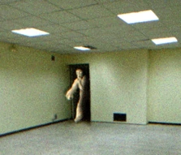

Terminal
FINALMENTE! Conseguir fazer um contato, você aí, está conseguindo ler isso? Está me ouvindo? Provavelmente esse microfone velho não funciona, droga.
Achava que esse local era seguro, mas parece que tem algo aqui, fiquei aqui por tantos anos e nada nunca aconteceu, mas acho que essa não é uma zona segura mais,
essa parece ser uma deixa para eu me retirar, talvez se eu pudesse pelo menos tirar uma última foto dessa coisa, assim você que estiver lendo essa mensagem pode o reconhecer,
vai que alguém realmente venha me salvar no final das contas...
Parece que ele está por perto, é melhor eu|

Nome:
Autor: Franklin Murray
Data: XX/XX/2017